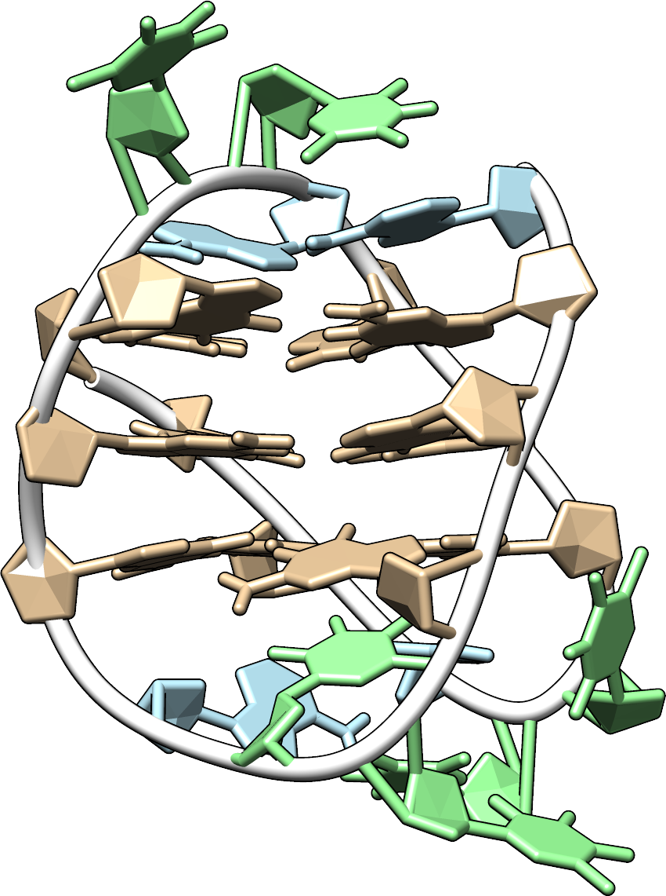
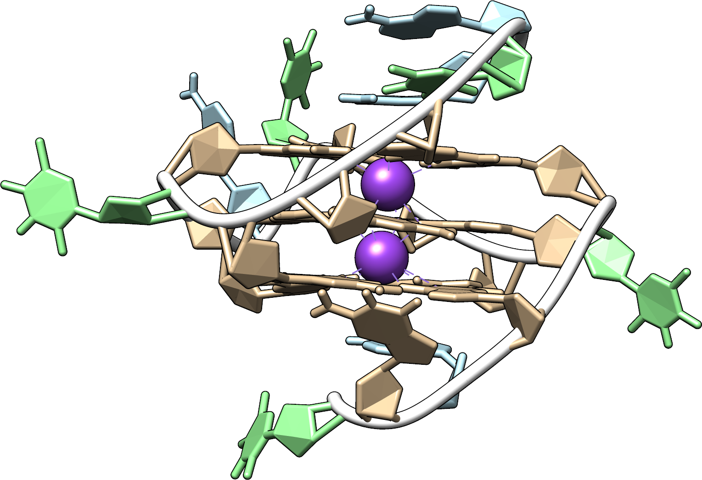

| PDB code | Report | Short description | Structure |
|---|---|---|---|
| 143D | report | Solution structure of the human telomeric repeat d[AG3(T2AG3)3] G-tetraplex |  |
| 1XAV | report | Major G-quadruplex structure formed in human c-MYC promoter, a monomeric parallel-stranded quadruplex |  |
| 2GKU | report | Monomeric human telomere DNA tetraplex with 3+1 strand fold topology, two edgewise loops and double-chain reversal loop | x |
| 2HY9 | report | Human telomere DNA quadruplex structure in K+ solution hybrid-1 form | x |
| 2JPZ | report | Human telomere DNA quadruplex structure in K+ solution hybrid-2 form | x |
| 2JSM | report | Monomeric human telomere DNA tetraplex with 3+1 strand fold topology, two edgewise loops and double-chain reversal loop | x |
| 2KF8 | report | Structure of a two-G-tetrad basket-type intramolecular G-quadruplex formed by human telomeric repeats in K+ solution | x |
| 2KM3 | report | Structure of an intramolecular G-quadruplex containing a G.C.G.C tetrad formed by human telomeric variant CTAGGG repeats | x |
| 2KPR | report | Monomeric intronic human chl1 gene quadruplex DNA | x |
| 2KYP | report | Monomeric Human CKIT-2 proto-oncogene promoter quadruplex DNA | x |
| 2LBY | report | G-quadruplex structure formed at the 5'-end of NHEIII_1 element in human c-MYC promoter | x |
| 2LK7 | report | Monomer-dimer equilibrium for 5'-5' stacking of propeller-type parallel-stranded G-quadruplexes | x |
| 2LOD | report | Solution-state structure of an intramolecular G-quadruplex with propeller, diagonal and edgewise loops | x |
| 2LPW | report | Human CEB25 minisatellite G-quadruplex | x |
| 2LXQ | report | Monomeric PilE G-Quadruplex DNA from Neisseria Gonorrhoeae | x |
| 2M27 | report | Major G-quadruplex structure formed in human VEGF promoter, a monomeric parallel-stranded quadruplex | x |
| 2MGN | report | Solution structure of a G-quadruplex bound to the bisquinolinium compound Phen-DC3 | x |
| 2N4Y | report | Structure and possible function of a G-quadruplex in the long terminal repeat of the proviral HIV-1 genome | x |
| 2O3M | report | Monomeric G-DNA tetraplex from human C-kit promoter | x |
| 4DA3 | report | Crystal structure of an intramolecular human telomeric DNA G-quadruplex 21-mer bound by the naphthalene diimide compound MM41 | x |
| 5I2V | report | NMR structure of a new G-quadruplex forming sequence within the KRAS proto-oncogene promoter region | x |
| 5LQG | report | A two-quartet G-quadruplex formed by human telomere in KCl solution at neutral pH | x |
| 5NYS | report | M2 G-quadruplex dilute solution | x |
| 5YEY | report | The structure of a chair-type G-quadruplex of the human telomeric variant in K+ solution | x |
| 6GZN | report | Adenine-driven structural switch from two- to three-quartet DNA G-quadruplex | x |
| HIV1XX | report | x | x |